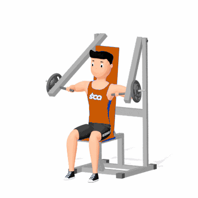

Supino Inclinado Articulado 2

Exercício de musculação em máquina articulada para fortalecimento e hipertrofia da porção superior do peitoral, com ativação secundária de deltoides e tríceps. Indicado para praticantes de todos os níveis.
Ficha Técnica
Tipo: Musculação
Grupo Muscular: Peito
Aparelho: Nenhum
Músculos: Nenhum
Como realizar
- Sente-se no aparelho e ajuste o encosto no ângulo inclinado adequado;
- Apoie os pés firmes no chão e segure as alças com pegada pronada;
- Inspire e empurre as alças para frente, estendendo os braços sem travar os cotovelos;
- Contraia o peitoral no final do movimento;
- Expire e retorne lentamente à posição inicial, controlando a descida;
- Repita conforme a prescrição.
 RC STORE
RC STORE